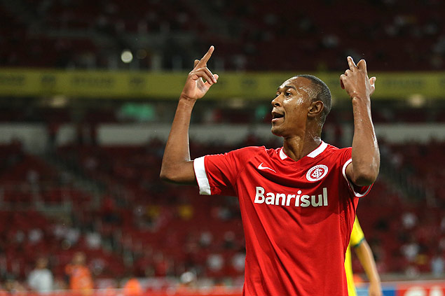
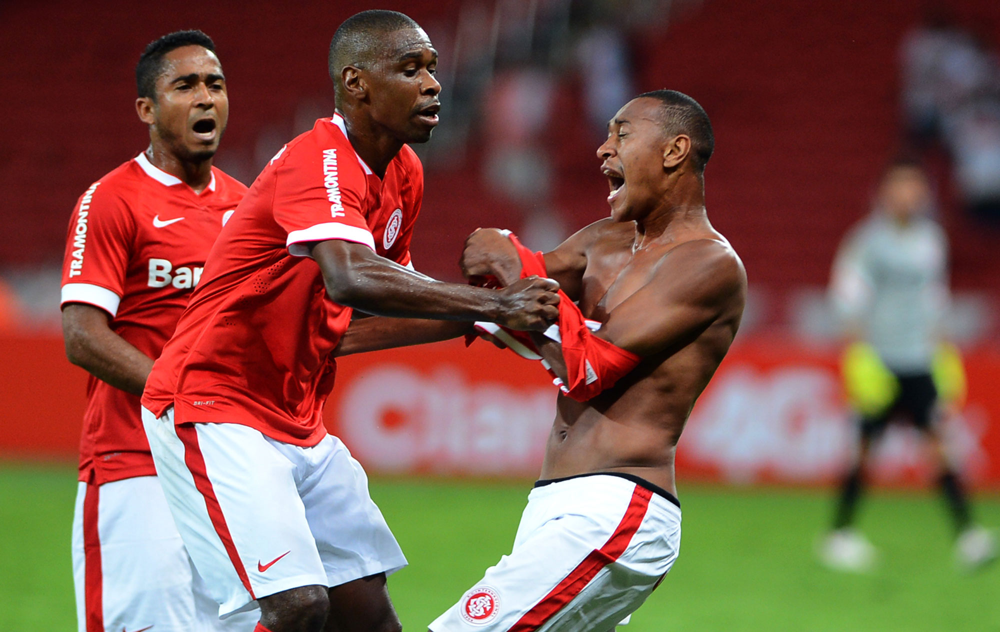
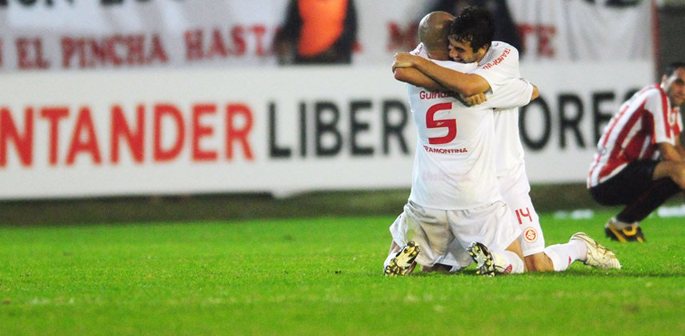
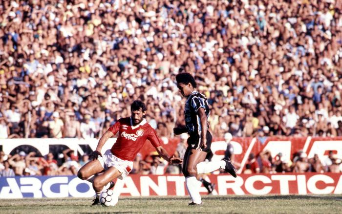
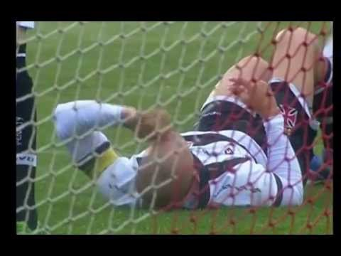
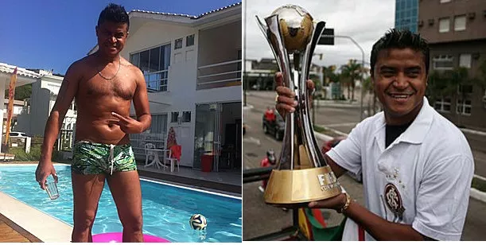

No dia 1/4/2015, ocorreu uma cena no mínimo inusitada no estádio Beira-Rio em Porto Alegre. O jogo era entre o mandante Internacional e Ypiranga-RS, válido pelo campeonato gaúcho. Tudo estava normal até os 18 minutos do segundo tempo, quando o lateral Fabrício se irritou com as vaias oriundas vindo da arquibancada, o atleta perdeu a cabeça e fez o seguinte gesto para a própria torcida:
Não satisfeito, Fabrício atrapalhou o andamento da partida e jogou a camisa do Inter no gramado, enquanto era contido por outros jogadores do Inter.
E ainda aos sair do gramado contido pelos seguranças do clube, virou para a torcida e disse: "Eu vou embora, eu vou embora"
No dia 20 de maio de 2010 em Quilmes, o Inter tinha pela frente o Estudiantes pelo jogo de volta das quartas de finais da Libertadores. O jogo da ida tinha ficado de 1 a 0 para o Inter no Beira-Rio. O adversário era o atual campeão da libertadores, um time difícil de ser batido. Nos primeiros 25 minutos de jogo, o Estudiantes pressionou e abriu 2x0 devido a falta de atenção da marcação colorada. A torcida do time local, empolgada com o resultado, começou a acender sinalizadores, e a fumaça deles tomou o campo. Aos 31 minutos do segunto tempo, Giuliano entrou no lugar do craque do time, Andres D'Alessandro, e após receber um passe açucarado de Andrezinho aos 43 minutos da etapa final, tocou na saída do goleiro Orión para assegurar a suada classificação colorada. O curioso é que a fumaça causada pelos sinalizadores acessos pelos torcedores do Estudiantes atrapalharam o goleiro a defender o chute de Giuliano. O Estudiantes ainda foi com tudo para o ataque, porém provou seu veneno. Em qualquer levantamento para a área, Abbondanzieri segurava firme e se atirava no chão, abusando da catimba. O desespero trocou de lado, os segundos passaram, mas nada mais mudou. Copeiro, o Inter prosseguiu na Libertadores, onde mais tarde se tornaria campeão.
Não há palavras para descrever o tamanho do clássico Grêmio Vs Internacional, o famoso clássico grenal vai muito além das quatros linhas. Em outubro de 2008, jornalistas nacionais e internacionais foram consultados pela revista Trivela e elegeram o Grenal como o "maior clássico do Brasil", isso porque o Grenal praticamente divide ao meio todo o estado do Rio Grande do Sul. Em outros estados, o número de grandes clubes é maior. Em abril de 2016, a revista inglesa FourFourTwo classificou o clássico como o maior do Brasil e o oitavo maior do mundo. Dado essas informações, ja se imagina que todo jogo entre essas equipes é uma verdadeira guerra. Mas com certeza alguem ja se questionou, qual foi o grenal mais histórico? É isso que você vai descobrir agora ! Beira-Rio 12/02/1989. Os relógios marcavam 08h00, quando os torcedores de ambas as equipes chegavam ao estádio do Beira-Rio. Semi-Final do campeonato brasileiro, o primeiro jogo foi 0x0, se o jogo terminasse empatado novamente, iria para a prorrogação, onde o Inter tinha vantagem do empate. O cenário? Beira-Rio lotado, a torcida do Inter estava com o grito entalado após ver o Grêmio ser tetracampeão gaúcho. A esperança colorada? Nilson, o centroavante que havia chegado do XV de Jaú e encantou a torcida. A necessidade de ganhar fez com que os gremistas abrissem o placar. Aos 25 minutos da etapa inicial, Marcos Vinicius balançou as redes de Taffarel. A vitória tricolor se encaminhava mais quando 13 minutos após o gol, Casemiro, lateral do colorado, foi expulso. O tecnico do Inter era Abel Braga, e tinha com ele a missão de vencer um clássico após um jejum de 12 Gre-Nais sem vitória. Eis que, no intervalo, ele faz uma loucura (ou genialidade), Abel Braga saca do time o volante Leomir e coloca em campo o atacante Diego Aguirre. A ousadia de Abel fez o Inter ir para o tudo ou nada. E não é que deu certo?!. Aos 16 minutos do segunto tempo, Nilson, o artilheiro do campeonato, marcou de cabeça. O inter continuou pressionando o Grêmio e foi coroado com outro gol do artilheiro, Maurício vem pela direita, chuta uma bola muito forte e rasteira, Nilson muito bem colocado, toca para as redes. O atacante ainda saiu comemorando dando o famoso tchau para a torcida do Grêmio. Após o apito final de Arnaldo Coelho, Nilson é ovacionado pelo torcida e tem seu nome gritado, mal ele conseguia conceder entrevista de tanta emoção.
Às vezes, mudar de time pode deixar o jogador meio confuso. Com certeza foi o que muitos torcedores do Vasco pensaram ao ver o lateral Nei subir e cabecear uma bola com violência contra a própria meta. Nei tinha toda uma história pelo Internacional, foi campeão da libertadores e conquistou quase tudo que podia por lá, ele havia trocado recentemente a camisa vermelha pela cruzmaltina, mas parece não ter esquecido suas origens. O golaço, contra, abriu caminho para a derrota do time do Vasco por 5 a 3 para o Internacional.
Rossi, jogador do Internacional, proporcinou essa cena hilária, durante uma chuva de granizo no jogo entre Inter X Galo, ele simplesmente pegou uma pedra de granizo e comeu.
Adriano Gabiru é maior que Adriano Imperador, pelo menos para o torcedor colorado, como não esquecer do gol de Gabiru contra o Barcelona em 2006, dando o mais desejado título para um clube, o Mundial de Clubes da FIFA. Mas perai torcedor alvirubro, você sabe por onde anda o Adriano Gabiru?
Após encerrar sua carreira pelo Tupy de Crissiumal, na 2ª divisão do Gaúcho. Carlos Adriano de Souza Vieira, mais conhecido como Adriano Gabiru, ja mandou o papo "Encerrei a carreira no profissional, já deu. Agora só vou jogar no amador. Tô com a minha família, tomando uma cervejinha. Agora posso falar nisso, não jogo mais mesmo" e ainda acrescentou "Vontade de tomar um Toddynho".